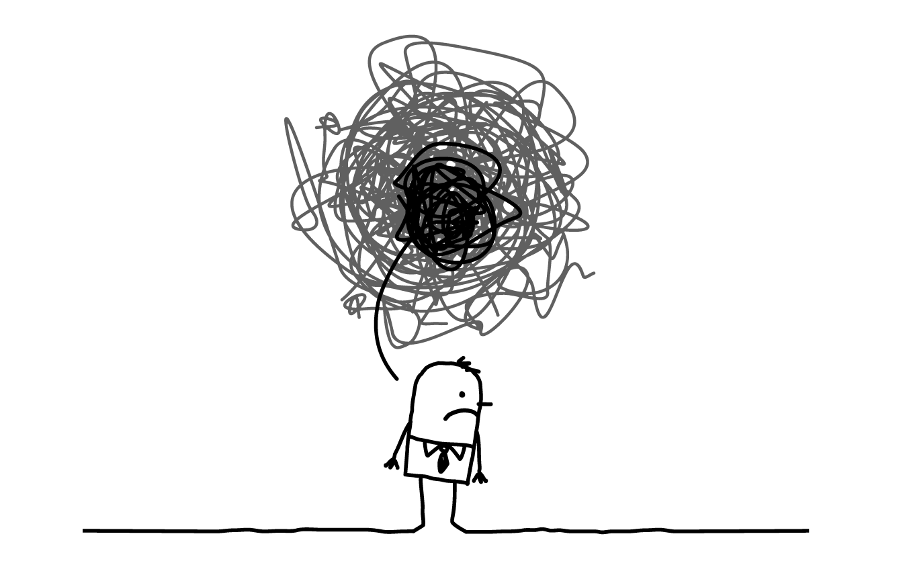

In reality, we suppress our anxiety and try to get away with it just by sharing it with the people we don’t know in real life. That’s where the mistake takes place. We unknowingly share things that may hamper our lives later in future by someone we don’t even know who. And then suddenly newspapers press the news as SUICIDE, but in reality it was pre-planned murder. Many people still believe that suicide is a case where no one is to be blamed, but in reality, there’s always a murderer. Be it a suicide case for the one you loved, be it a suicide case for the all the problems that had been caused by someone, be it a suicide case of deep anxiety and depression because of the total catastrophic pressure from your institution, business, home, etc…..
These are actually all murders, not suicide cases!
This is a new generation where people believe in realism, but in fact, we always fantasize everything. We think things are going well, going worse, going steady, but in reality it is exactly the opposite.
